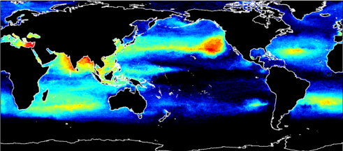

Tracking Marine Debris
Marine debris and particularly plastic pollution in the ocean has become a major global environmental problem. Over the last decade, the issue has received a significant interest from the scientific community, the public and from policy-makers. While mitigation efforts are primarily oriented towards reducing the sources of plastic entering the marine environment, The Ocean Cleanup, a Netherland based foundation, is developing technologies to extract plastic pollution already present in the oceans waters.
The Modelling House is developing a suite of numerical model tools for The Ocean Cleanup to predict the likely fate of floating marine debris in the marine environment from potential sources to global accumulation areas. The particle dispersal model integrates global sea-surface current forcing as well as wave-induced Stokes drift and atmospheric drag. Investigated sources of marine debris include mismanaged waste production in coastal areas, merchant shipping, fisheries, aquaculture, inputs from rivers and catastrophic events such as tsunamis and hurricanes.
Tracking marine debris in oceanic basins and subtropical gyres.
Marine debris accumulation - frequency simulation test.